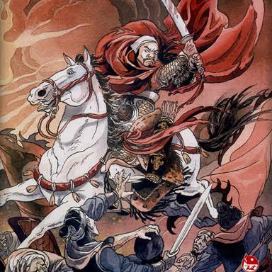
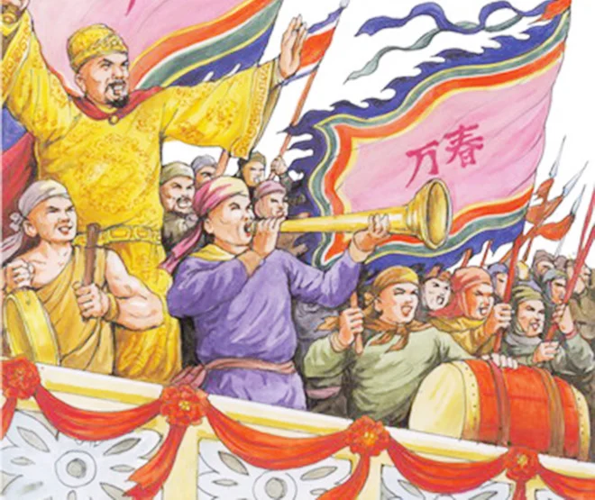
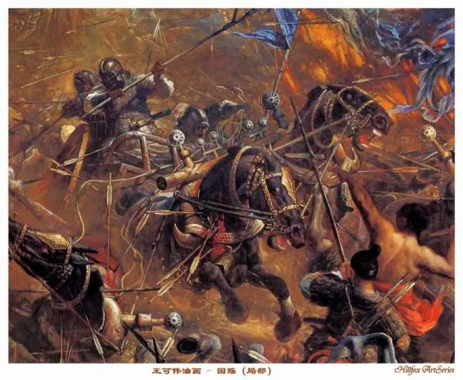
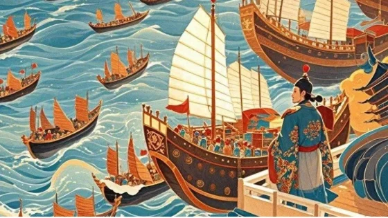
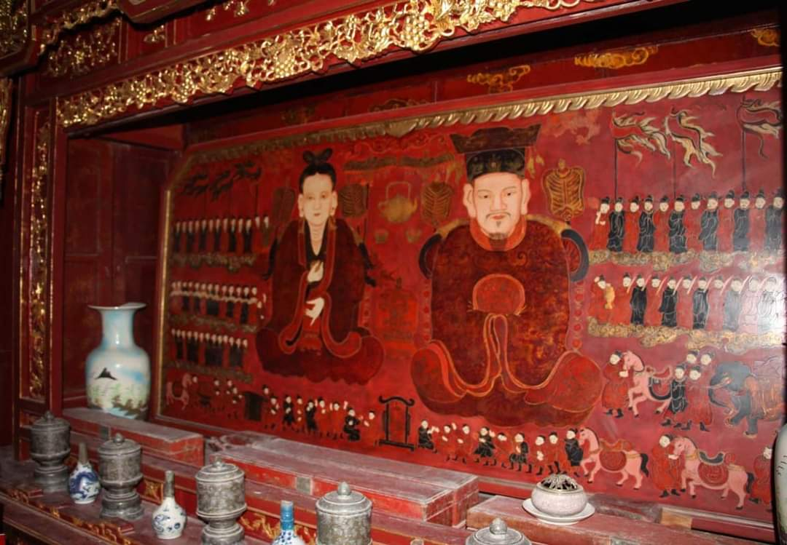

👑
Sử Việt Tương Tác
LÝ BÍ
Khởi Nghĩa & Nước Vạn Xuân
Khởi Nghĩa & Nước Vạn Xuân
Năm 542 — 548 · Lý Nam Đế
Ngươi là Lý Bí — hào trưởng đất Thái Bình dấy binh chống ách đô hộ nhà Lương. Từ ngày giải phóng Giao Châu, xưng đế lập nước Vạn Xuân, đến cuộc kháng chiến bi tráng trên hồ Điển Triệt: một hành trình 5 chương về khát vọng độc lập và tự tôn dân tộc.
👑 5 chương
🎓 Kiến thức + Thử thách
📖 Có nguồn tham khảo
▾ hoặc cuộn xuống
Chương 1 / 5
Khởi Nghĩa Bùng Lên
Năm 542 SCN · Thái Bình, Giao Châu

GIAO CHÂU — 542 SCN 📖 nguồn
Đất nước dưới ách đô hộ nhà Lương
1
542
Khởi nghĩa
2
542
Giải phóng
3
544
Lập nước
4
545
Kháng chiến
5
548
Di sản
Khởi Nghĩa
5%
📚 Bối cảnh
Từ năm 43 SCN, Giao Châu bị các triều đại phương Bắc đô hộ liên tục. Quan lại vơ vét thuế khóa, đàn áp người Việt tàn bạo. Đặc biệt dưới thời thái thú Tiêu Tư — tham nhũng, tàn ác bậc nhất.
Ngươi là Lý Bí — tên đầy đủ là Lý Bôn, xuất thân từ dòng dõi hào trưởng đất Thái Bình. Từng làm quan cho nhà Lương, ngươi chứng kiến tận mắt cảnh trăm họ lầm than dưới tay thái thú Tiêu Tư. Sau nhiều năm nuôi chí, thời cơ đã đến.
Lý Bí — lời hịch khởi nghĩa
"Người Giao Châu chúng ta có tổ tiên, có văn hóa, có bản sắc riêng. Ta không thể nhìn người anh em mình bị đối xử như nô lệ. Ai theo ta, hãy cùng ta đánh đuổi quân xâm lược!"
💭 Suy ngẫm (không chấm điểm)
Lý Bí từng làm quan cho chính triều đình mình sắp chống lại. Điều gì khiến một người trong bộ máy cai trị lại quay sang đứng về phía nhân dân?
Không có đáp án đúng/sai — hãy tự suy ngẫm.
🎓 Kiến thức cơ bản +8 điểm
Lý Bí khởi nghĩa chống lại triều đại nào của Trung Hoa?
🎓 Kiến thức +8 điểm
Thái thú tàn ác bị Lý Bí đánh đuổi là ai?
Mùa xuân năm 542, ngươi tập hợp hào kiệt bốn phương, bắt đầu dấy binh. Câu hỏi lớn đặt ra: chiến lược khởi nghĩa là gì?
⚔️ Thách thức · Sắp xếp chiến lược
Đặt đúng trình tự khởi nghĩa!
Kéo và thả để sắp xếp các bước theo thứ tự hợp lý nhất mà Lý Bí đã thực hiện. Cần đúng ít nhất 3/4 bước để nhận điểm thưởng.
⠿Tập hợp hào kiệt — Triệu Túc, Triệu Quang Phục, Lý Phục Man
⠿Nhận rõ tội ác của thái thú Tiêu Tư, nuôi chí lớn
⠿Tấn công châu lỵ, đánh đuổi Tiêu Tư chạy về Bắc
⠿Bỏ quan về quê, bí mật xây dựng lực lượng
⚡ Bước đầu — lấy sức mạnh từ đâu?
⭐ Lựa chọn đúng lịch sử!
Xuất sắc! Lý Bí liên kết với các hào trưởng như Triệu Túc (cha của Triệu Quang Phục), Lý Phục Man — thủ lĩnh người Tày. Sức mạnh liên minh dân tộc vượt hơn bất cứ chiến lược đơn lẻ nào.
📖 Lực lượng khởi nghĩa Lý Bí
Lý Bí xây dựng liên minh đa dân tộc: người Kinh, người Tày, người Mường... Điều này tạo nên sức mạnh đặc biệt: một cuộc khởi nghĩa của toàn dân Giao Châu, không phải chỉ một tộc người.
👥 Liên minh đa dân tộc
⚔️ Triệu Túc — Tướng giỏi
🏹 Lý Phục Man — Thủ lĩnh Tày
⚡ Tiếp tục...
📍 Suy nghĩ lại...
Lý Bí hiểu: thời cơ không chờ người. Lương thực có thể tích lũy dần, nhưng sức mạnh con người và tinh thần khởi nghĩa mới là vũ khí thật sự.
Càng chờ, thái thú Tiêu Tư càng siết chặt đàn áp, hào kiệt các nơi dễ nản lòng và tản mát. Nhiều khả năng khi Lý Bí ra quân, lực lượng đã không còn đủ đoàn kết và khí thế như lúc lòng dân đang sục sôi nhất.
⚡ Hành động ngay...
📍 Nguy hiểm!
Lâm Ấp là vương quốc với tham vọng riêng. Dựa vào họ có thể mang lại viện binh ngắn hạn nhưng đổi lại lãnh thổ và chủ quyền.
Đổi lại viện binh, Lâm Ấp hoàn toàn có thể đòi hỏi đất đai hoặc ràng buộc chính trị lâu dài — biến cuộc khởi nghĩa giành độc lập thành việc đổi một ách lệ thuộc này lấy một ách lệ thuộc khác.
⚡ Tự lực cánh sinh...
Chương 2 / 5
Gươm Vàng Giải Phóng
Năm 542 SCN · Từ Thái Bình đến Long Biên

GIẢI PHÓNG LONG BIÊN
542 SCN · Tiêu Tư tháo chạy về phương Bắc
1
542
Khởi nghĩa
2
542
Giải phóng
3
544
Lập nước
4
545
Kháng chiến
5
548
Di sản
⚡ Tốc độ
Chỉ trong vài tháng, quân Lý Bí quét sạch quan quân nhà Lương khắp Giao Châu. Tiêu Tư hoảng sợ bỏ thành chạy thẳng về phương Bắc.
Gươm dậy sáng, cờ bay phần phật! Chỉ trong mùa xuân năm 542, quân Lý Bí đã giải phóng gần như toàn bộ Giao Châu. Tiêu Tư bỏ thành Long Biên tháo chạy. Nhà Lương ba lần cử quân sang tái chiếm đều bị đánh lui cả.
📝 Thách thức · Điền từ còn thiếu
Điền tên nhân vật lịch sử!
Điền tên đúng vào các ô trống. Mỗi ô đúng +5 điểm.
🎓 Kiến thức +10 điểm
Sau khi giải phóng Giao Châu, nhà Lương phản ứng như thế nào?
Cổng Chương 3 — Lập Nước Vạn Xuân
Để chứng kiến khoảnh khắc lịch sử Lý Bí lên ngôi Hoàng Đế, bạn cần tích lũy đủ 30 điểm.
🔒 Cần: 30 điểm | Bạn đang có: 0 điểm
Chương 3 / 5
Nước Vạn Xuân Ra Đời
Năm 544 SCN · Lễ Đăng Quang Lịch Sử

LÝ NAM ĐẾ — 544 SCN 📖 nguồn
Hoàng đế đầu tiên tự xưng của người Việt
1
542
Khởi nghĩa
2
542
Giải phóng
3
544
Lập nước
4
545
Kháng chiến
5
548
Di sản
🏛 Tuyên ngôn
Năm 544, Lý Bí tự xưng là Nam Việt Đế (sau gọi là Lý Nam Đế). Đây là lần đầu tiên trong lịch sử, một người Việt tự xưng đế — ngang hàng với hoàng đế Trung Hoa.
Mùa xuân năm 544, trong tiếng trống đồng vang vọng, ngươi — Lý Bí — tuyên bố lập nước Vạn Xuân. Cái tên mang ý nghĩa: đất nước trường tồn muôn đời như mùa xuân bất tận. Ngươi đặt kinh đô tại Tống Bình, dựng chùa Khai Quốc (nay là chùa Trấn Quốc).
Lý Bí — tuyên ngôn lập nước Vạn Xuân 🔵 dựng lại
"Nước ta là nước của người Việt, có từ ngàn đời. Ta lập nước Vạn Xuân — mong đất nước ta tồn tại muôn năm như mùa xuân bất diệt. Từ nay, ta tự xưng là Nam Việt Đế — không thần phục bất cứ triều đình ngoại bang nào!"
💭 Suy ngẫm (không chấm điểm)
Xưng "Đế" thay vì "Vương" chỉ là một chữ khác nhau trên danh nghĩa — nhưng vì sao điều đó lại được xem là một tuyên ngôn độc lập mạnh mẽ đến vậy?
Không có đáp án đúng/sai.
🎓 Kiến thức quan trọng +12 điểm
Ý nghĩa tên nước "Vạn Xuân" là gì?
🔗 Thách thức · Nối cột lịch sử
Nối đúng sự kiện với ý nghĩa!
Bấm một ô bên trái rồi bấm ô tương ứng bên phải. Nối đúng hết để nhận điểm thưởng +20 điểm!
Tự xưng "Nam Việt Đế"
Đặt tên nước "Vạn Xuân"
Xây chùa Khai Quốc
Đặt kinh đô Tống Bình
Nay là chùa Trấn Quốc, Hà Nội
Khẳng định ngang hàng đế vị với TQ
Nay là Hà Nội — trung tâm đất nước
Mong đất nước trường tồn muôn năm
🎓 Kiến thức +10 điểm
Lý Bí xây chùa nào trong thời kỳ trị vì — ngôi chùa đó ngày nay còn tồn tại?
"Lần đầu tiên trong lịch sử, một người Việt xưng Đế — không phải 'vương' hay 'vua' theo nghĩa phụ thuộc — mà là Hoàng Đế ngang hàng với Thiên tử Trung Hoa. Đây là tuyên ngôn độc lập đầu tiên của dân tộc Việt!"
⚡ Với tư cách Hoàng Đế — ưu tiên nào quan trọng nhất?
⭐ Tầm nhìn trị quốc!
Đúng! Lý Bí xây dựng bộ máy triều đình, phong tướng Triệu Túc làm Thái Phó, Tinh Thiều làm Thượng Thư, Phạm Tu làm đại tướng quân. Nước Vạn Xuân có một chính quyền độc lập thực sự!
📖 Triều đình Vạn XuânLý Bí tổ chức triều đình theo mô hình độc lập, không phải "chư hầu" của ai. Tinh Thiều là nhà trí thức từng bị nhà Lương khinh thường, nay được trọng dụng. 🏛 Triệu Túc — Thái Phó⚔️ Phạm Tu — Đại tướng📚 Tinh Thiều — Thượng Thư
⚡ Tiếp tục...
📍 Cần cân bằng hơn
Quân sự quan trọng, nhưng một nhà nước vững mạnh cần cả văn hóa, giáo dục và quản trị.
Một triều đình chỉ có binh lực mà không có bộ máy quản trị, không có nhân tài văn thần giúp việc, sẽ khó lòng vận hành đất nước lâu dài — và cũng khó thuyết phục các hào kiệt trí thức tiếp tục theo phò.
⚡ Xây nền móng vững chắc...
📍 Nhà Lương sẽ không tha
Nhà Lương coi Giao Châu là lãnh thổ — họ sẽ không bao giờ công nhận độc lập thực sự.
Đàm phán với một triều đình chưa từng công nhận Vạn Xuân là nước độc lập gần như chắc chắn không đi đến đâu — và trong lúc chờ đợi, quân Vạn Xuân sẽ mất thời gian quý báu để chuẩn bị phòng thủ trước đợt tấn công gần như chắc chắn sẽ đến.
⚡ Tự cường là con đường duy nhất...
Chương 4 / 5
Máu Đổ Trên Hồ Điển Triệt
Năm 545–548 SCN · Cuộc kháng chiến quyết liệt

HỒ ĐIỂN TRIỆT
Nơi diễn ra trận thủy chiến sinh tử · 545–546 SCN
1
542
Khởi nghĩa
2
542
Giải phóng
3
544
Lập nước
4
545
Kháng chiến
5
548
Di sản
⚔️ Thế lực mạnh
Năm 545, nhà Lương cử danh tướng Trần Bá Tiên dẫn đại quân sang. Đây là thử thách sinh tử của nước Vạn Xuân.
Năm 545, Trần Bá Tiên — đại tướng thiên tài của nhà Lương — dẫn đại quân tràn xuống. Tướng Phạm Tu hy sinh trong trận đầu. Thất thế, ngươi rút lui về đóng quân trên hồ Điển Triệt — trận thủy chiến bi hùng nhất lịch sử thời kỳ này bắt đầu.
🎓 Kiến thức +10 điểm
Vị đại tướng nào của nhà Lương được cử sang đánh Lý Bí năm 545?
Quân Lương tấn công dữ dội vào ban đêm khi lính của ngươi đang ngủ. Quân ta thương vong nặng. Ngươi buộc phải rút quân vào rừng sâu Khuất Lão.
Triệu Quang Phục — bày tỏ trước quân lệnh 🔵 dựng lại
"Bệ hạ — lực ta yếu hơn địch. Nhưng địa lợi về ta. Cho phép thần vào đầm Dạ Trạch cầm cự — từng bước tiêu hao sinh lực địch. Một ngày kia ta sẽ phản công!"
💭 Suy ngẫm (không chấm điểm)
Trao lại binh quyền cho tướng khác giữa lúc nguy khốn nhất — đó là sự buông xuôi hay là một quyết định sáng suốt của người đứng đầu?
Không có đáp án đúng/sai.
🔥 Thách thức cao · Chuỗi câu hỏi chiến thuật
Vượt qua 3/4 câu hỏi chiến thuật để tiếp tục!
Đây là bài kiểm tra khó — cần đúng ít nhất 3 trong 4 câu để mở cổng chương 5. Mỗi câu đúng +8 điểm.
1. Tại sao Lý Bí chọn hồ Điển Triệt làm căn cứ phòng thủ?
2. Ai là người được Lý Bí tin tưởng giao trọng trách tiếp tục kháng chiến?
3. Căn cứ đầm Dạ Trạch nằm ở tỉnh/khu vực nào ngày nay?
4. Phạm Tu — đại tướng của Lý Bí — được thờ ở đâu ngày nay?
⚔️ Kháng chiến kiên cường

TRIỆU QUANG PHỤC
Dạ Trạch Vương — Anh hùng đầm lầy
Kháng chiến trong đầm lầy. Lý Bí trao binh quyền cho Triệu Quang Phục, lui về Khuất Lão. Triệu Quang Phục dùng chiến thuật du kích từ đầm Dạ Trạch — mỗi đêm đột kích quân Lương, rồi tan vào bóng tối đầm lầy.
📖 Triệu Quang Phục — Dạ Trạch VươngTriệu Quang Phục giữ vững đầm Dạ Trạch suốt nhiều năm, tiêu hao sinh lực quân Lương. Khi nhà Lương suy yếu vì nội chiến, ông phản công thành công năm 550, giải phóng Giao Châu lần hai!
🎓 Kiến thức +12 điểm
Lý Bí mất năm nào và ở đâu?
⚡ Tiếp tục...
Chương 5 / 5
Di Sản Vạn Xuân
Ý Nghĩa Ngàn Năm Của Lý Nam Đế

CHÙA TRẤN QUỐC — HÀ NỘI 📖 nguồn
Nguyên là chùa Khai Quốc — Lý Bí xây năm 544
📌 Ảnh gợi ý cần bổ sung riêng cho chương này: images/lybi-disan.jpg (chùa Trấn Quốc / đền thờ Lý Nam Đế)
1
542
Khởi nghĩa
2
542
Giải phóng
3
544
Lập nước
4
545
Kháng chiến
5
548
Di sản
🌟 Di sản
Nước Vạn Xuân tồn tại ngắn (544–602 SCN) nhưng để lại dấu ấn vĩnh cửu: tư tưởng độc lập — ngang hàng với Trung Hoa.
Năm 548, Lý Bí lâm bệnh và mất tại vùng Khuất Lão. Nhưng di sản của ông không chết theo. Triệu Quang Phục tiếp tục, giải phóng đất nước năm 550. Nước Vạn Xuân tồn tại thêm nửa thế kỷ cho đến năm 602.
📖 Tầm vóc lịch sử Lý Bí
1. Người Việt đầu tiên tự xưng Đế — ngang hàng với Thiên tử Trung Hoa
2. Lập ra nhà nước độc lập đầu tiên sau thời kỳ Bắc thuộc dài nhất (500 năm)
3. Xây chùa Khai Quốc (nay là chùa Trấn Quốc — ngôi chùa lâu đời nhất Hà Nội)
4. Đặt tên nước Vạn Xuân — triết lý bền vững muôn đời
2. Lập ra nhà nước độc lập đầu tiên sau thời kỳ Bắc thuộc dài nhất (500 năm)
3. Xây chùa Khai Quốc (nay là chùa Trấn Quốc — ngôi chùa lâu đời nhất Hà Nội)
4. Đặt tên nước Vạn Xuân — triết lý bền vững muôn đời
👑 Lý Nam Đế
🏛 Nước Vạn Xuân
⏱ 500 năm Bắc thuộc kết thúc
🕌 Chùa Trấn Quốc 1500 năm
🏆 Thách thức cuối · Thử thách tổng hợp
Kiểm tra toàn bộ hành trình — Cần đúng 4/5 câu!
Đây là thách thức khó nhất. Đúng 4/5 → nhận danh hiệu cao nhất. Mỗi câu đúng +15 điểm.
1. Nước Vạn Xuân tồn tại từ năm nào đến năm nào?
2. Lý Bí đặt kinh đô ở đâu?
3. Ai là người kế tục Lý Bí, tiếp tục kháng chiến và giải phóng đất nước năm 550?
4. Bài học lớn nhất từ Lý Bí là gì?
5. Điểm khác biệt lớn nhất giữa Lý Bí và các cuộc khởi nghĩa trước đó (như Hai Bà Trưng) là gì?
"Lý Nam Đế — người đầu tiên dám nói: Ta là Hoàng Đế, không phải chư hầu. Ý chí đó sống trong Triệu Quang Phục, trong Ngô Quyền, trong Đinh Bộ Lĩnh, trong Lý Công Uẩn... Cho đến ngày nay."
👑
Hành Trình Hoàn Thành!
0 điểm
—
...
🗺️ Hành trình 6 năm dựng nước
Sơ đồ cách điệu các điểm dừng chân quan trọng của Lý Bí.
📔 Nhật ký hành trình của bạn
📚 Ba bài học từ Lý Nam Đế
1. Tự tôn dân tộc là sức mạnh: Khi Lý Bí xưng "Nam Việt Đế", ông tuyên bố với thế giới rằng người Việt là một dân tộc ngang hàng, không thấp kém hơn ai.
2. Đoàn kết đa dân tộc: Liên minh Kinh–Tày–Mường trong cuộc khởi nghĩa Lý Bí chứng minh sức mạnh của đoàn kết vượt ranh giới tộc người.
3. Di sản vô hình quý hơn giang sơn: Nước Vạn Xuân mất sau 58 năm — nhưng cái tên, cái tư tưởng "Vạn Xuân" sống mãi, truyền cảm hứng cho mọi cuộc kháng chiến sau này.
2. Đoàn kết đa dân tộc: Liên minh Kinh–Tày–Mường trong cuộc khởi nghĩa Lý Bí chứng minh sức mạnh của đoàn kết vượt ranh giới tộc người.
3. Di sản vô hình quý hơn giang sơn: Nước Vạn Xuân mất sau 58 năm — nhưng cái tên, cái tư tưởng "Vạn Xuân" sống mãi, truyền cảm hứng cho mọi cuộc kháng chiến sau này.
📚 Nguồn Tham Khảo
Các sự kiện, ngày tháng, số liệu trong trang này được đối chiếu từ các nguồn dưới đây. Các đoạn hội thoại (đánh dấu tag 🔵 dựng lại) là minh họa theo tinh thần lịch sử, không phải nguyên văn ghi chép.
Tài liệu chính thống
— Đại Việt sử ký toàn thư — phần Ngoại kỷ, quyển 4 (khởi nghĩa Lý Bí, lập nước Vạn Xuân)
— Việt sử lược, Khâm định Việt sử thông giám cương mục (giai đoạn Vạn Xuân — Điển Triệt — Dạ Trạch)
— Tư liệu di tích chùa Trấn Quốc, Hà Nội (tiền thân là chùa Khai Quốc, 544 SCN)
Ghi chú về phương pháp thể hiện
— Ngày tháng, số liệu, kết quả sự kiện: dựa trên tư liệu đã kiểm chứng (tag 📖 vàng)
— Hội thoại giữa các nhân vật: dựng lại nhằm minh họa bối cảnh, giúp hình dung sinh động hơn (tag 🔵 xanh)
— Phần trò chơi lựa chọn (choices) là hư cấu mang tính giáo dục, xây dựng dựa trên diễn biến lịch sử đã ghi nhận